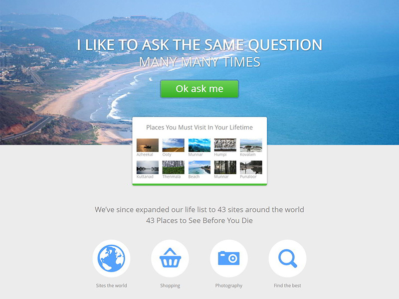
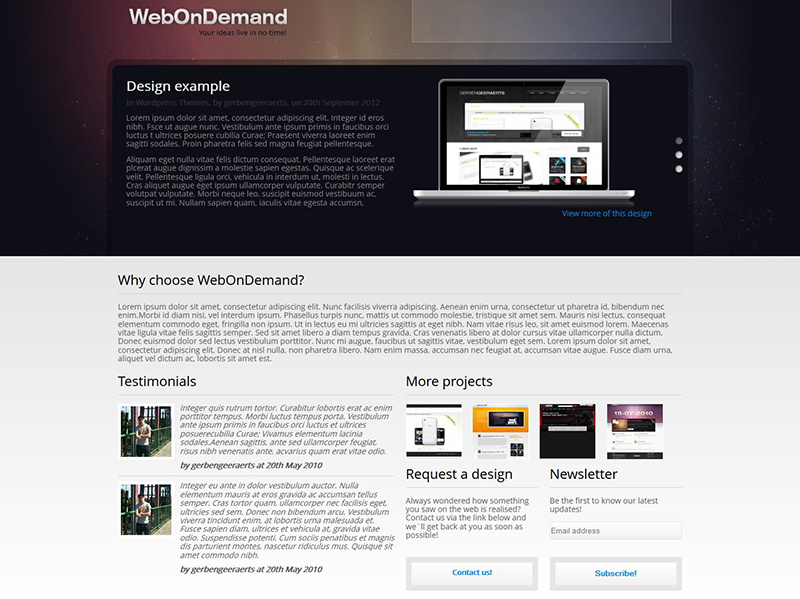

Selected projects
Representative directions from my recent design and research practice







I am currently pursuing an M.A. in Visual Communication Design at Wales College, Lanzhou University, where I work at the intersection of visual communication, immersive media, and cultural storytelling. My practice combines research, concept development, and experience design.
I am especially interested in XR experience design, interactive narrative, digital humanities, AIGC applications, and spatial emotional design. I use design to turn abstract cultural memory, poetic language, and everyday experience into something people can feel, explore, and remember.
My recent work includes projects in VR exhibition design, multisensory poetry learning, digital media installations, and AI-assisted creative practice. I also have hands-on experience with Unity, 3D modeling, visual prototyping, and narrative-driven interface design.
Current status: Open to research collaboration, exhibitions, and creative technology opportunities
I design narrative experiences for VR, AR, and spatial interfaces, with attention to atmosphere, temporality, and emotional engagement. I am interested in how immersive systems can support reflection, memory, and embodied understanding.
I translate poetry, local history, and cultural narratives into interactive forms. My work asks how design can reactivate cultural memory through multisensory interaction, spatial media, and contemporary visual language.
I explore how AI can support concept generation, image making, story development, and new interaction forms. Rather than treating AI as automation alone, I see it as a co-creative tool for building richer design processes.
I study how light, sound, motion, color, and visual rhythm shape emotional perception in digital and physical environments. This informs my work in exhibitions, installations, and immersive environments.
My background in visual communication supports system thinking as well as detail-oriented execution. I work with layout, typography, information structure, and interaction flow to create clear and expressive interfaces.
I prototype ideas through storyboards, interface mockups, motion concepts, interactive flows, and 3D scenes. I value making ideas tangible early so that form, narrative, and experience can be tested together.
I am drawn to projects that connect culture and technology in a way that feels intuitive, affective, and intellectually grounded. I care about experiences that do more than communicate information: they should also invite curiosity, empathy, and imagination.
Fan Yidan
I begin with close reading, literature review, reference analysis, and observation. I try to understand not only the content itself, but also the emotional, cultural, and spatial conditions around it.
I translate research into a design direction with keywords, narrative structure, interaction logic, and visual tone. At this stage, I clarify what users should perceive, feel, and remember.
I use sketches, interface layouts, Figma flows, motion studies, Unity scenes, or 3D models to quickly externalize the idea. Prototyping helps me evaluate storytelling, usability, and emotional pacing together.
I iterate by comparing the concept with user experience, visual coherence, and research goals. I care about polishing the details that make an experience feel intentional, memorable, and alive.
Representative directions from my recent design and research practice


Selected academic, exhibition, and award milestones

M.A. in Visual Communication Design at Wales College, Lanzhou University. GPA 4.31/5.0, ranked 1 out of 39.
Academic profile, Lanzhou University
Research interests span data visualization, interactive narrative, spatial emotion, and digital humanities. Authored a paper published in a top journal in mathematics.
Research, interdisciplinary practice
Recipient of a National Silver Award in the China Good Creativity and National Digital Art Design Competition, with more than 14 national and provincial design awards.
Awards, design competitions
Provincial First Prize in the Future Designer NCDA, recognizing strong work in visual communication and creative practice.
Recognition, Future Designer NCDA
AIGC work Virgin Realm was commercially licensed and exhibited in Beijing. Digital media piece Endless Body was selected for the 2025 Midsummer Art Season in Beijing.
Exhibitions, Beijing
Young member of ASIFA International Animated Film Association, with continuing interests in cross-disciplinary research and creative technology.
Professional affiliation, ASIFA
Research interests: XR, digital humanities, interactive narrative, cultural memory
Tools: Unity, 3D modeling, visual prototyping, interface design
Languages: Chinese and English for academic communication